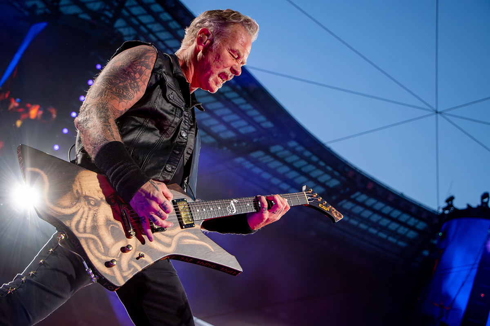
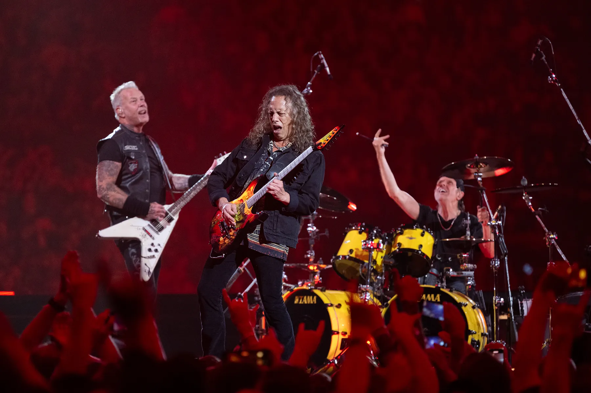
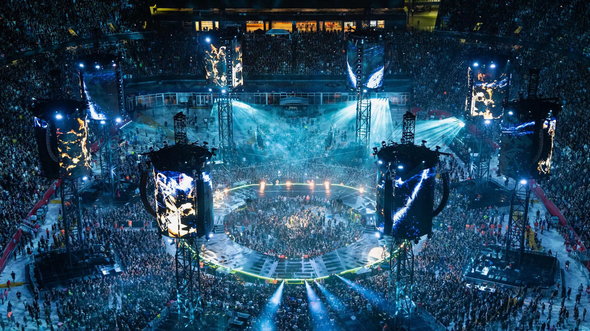
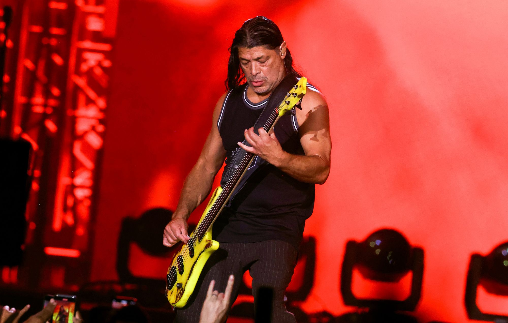

Az M72 World Tour a Metallica eddigi egyik legambiciózusabb és leginnovatívabb turnéja, amely új szintre emelte a zenekar élő fellépéseit. A turné különlegessége az úgynevezett „No Repeat Weekend” koncepció, amelynek keretében a zenekar egy adott városban két egymást követő estén lép fel, mindkét alkalommal teljesen eltérő setlisttel. Ez nemcsak a rajongók számára jelent egyedülálló élményt, hanem a Metallica több mint négy évtizedes életművének rendkívüli sokszínűségét is hangsúlyozza, a korai klasszikusoktól egészen a legújabb dalokig.
A turné vizuális megvalósítása is kiemelkedő: a monumentális, kör alakú színpad a stadionok közepén helyezkedik el, lehetővé téve, hogy a közönség minden irányból közelről élhesse át a koncertet. A színpad fölé függesztett, hatalmas LED-tornyok és a korszerű fény- és hangtechnika teljesen új dimenzióba helyezik a Metallica koncertélményt, miközben a zenekar folyamatos mozgásban van, így nincs „hátsó sor” vagy kevésbé látványos nézőpont.
Az M72 World Tour nem csupán egy albumturné, hanem egy átfogó, karriert összegző zenei utazás, amely méltón képviseli a Metallica örökségét és jelenét egyszerre. A turné bebizonyítja, hogy a zenekar évtizedek után is képes megújulni, kockázatot vállalni és olyan élményt nyújtani, amely mind a régi rajongók, mind az új generáció számára emlékezetes marad.
Setlist és dalok
Az M72 turnén a Metallica a klasszikus slágereit és az új dalait is játssza. A koncert programja változhat városonként, különösen a „No Repeat Weekend” koncepció miatt, amikor két egymást követő koncerten nem ismételnek dalokat. Így a rajongók minden este más élményt kapnak.
| Gyakran játszott dalok |
|---|
| Enter Sandman |
| Master of Puppets |
| One |
| Seek & Destroy |
| Nothing Else Matters |
| Dalok a 72 Seasons albumról |
| Lux Æterna |
| 72 Seasons |
| If Darkness Had a Son |
| Screaming Suicide |
A turné egyik különlegessége, hogy a színpad a stadion közepén helyezkedik el, így a közönség minden oldalról körülveszi a zenekart. Ez egyedi hangulatot ad a koncerteknek, és minden rajongó közelebb érezheti magát a zenéhez.



